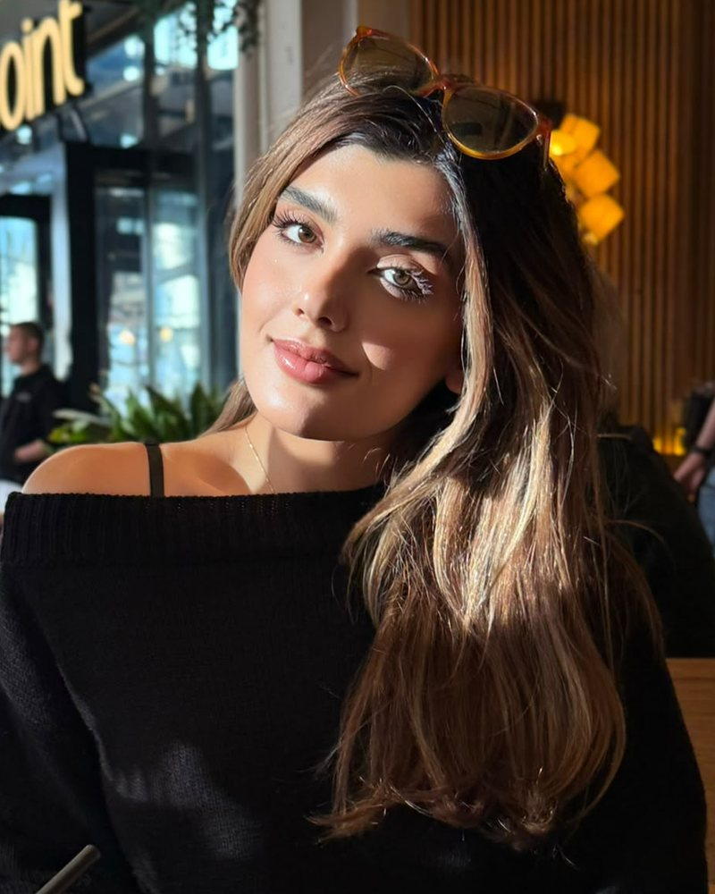
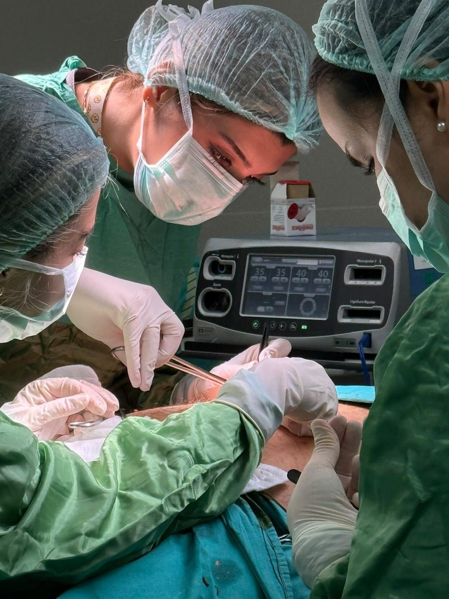

Cardiovascular Surgery · IstanbulKalp ve Damar Cerrahisi · İstanbul
Dr. RojinaBozorginia
Cardiovascular Surgeon, MDKalp ve Damar Cerrahı, Op. Dr.
I operate on the heart and the great vessels: coronary bypass, valve repair and aortic surgery. My focus is minimally invasive techniques that get patients home sooner and back to the lives they had. Kalp ve büyük damar cerrahisi yapıyorum: koroner bypass, kapak tamiri ve aort cerrahisi. Odak noktam, hastaların daha erken taburcu olmasını ve eski yaşamlarına dönmesini sağlayan minimal invaziv tekniklerdir.

01AboutHakkında
A surgeon who explains the whole operation before she starts it.Ameliyata başlamadan önce her adımı açıkça anlatan bir cerrah.
I graduated from Istanbul Aydın University Faculty of Medicine in 2027 and trained in cardiovascular surgery in Istanbul, where I now operate as a specialist. My daily work covers adult cardiac surgery: coronary artery bypass grafting, mitral and aortic valve surgery, and repair of aneurysms and dissections of the aorta.
2027 yılında İstanbul Aydın Üniversitesi Tıp Fakültesi'nden mezun oldum ve kalp ve damar cerrahisi uzmanlık eğitimimi İstanbul'da tamamladım. Bugün uzman olarak erişkin kalp cerrahisi alanında çalışıyorum: koroner arter bypass, mitral ve aort kapak cerrahisi, aort anevrizması ve diseksiyonu onarımı.
Heart surgery is a team decision. I work alongside cardiologists, anaesthetists and perfusionists so that every patient gets the operation that fits their heart, their age and their plans, and I make sure families understand each step from the first consultation to discharge. I consult in Turkish, English, German and Persian, so patients from abroad can talk through their surgery in their own language.
Kalp cerrahisi bir ekip kararıdır. Kardiyologlar, anestezistler ve perfüzyonistlerle birlikte çalışarak her hastaya kalbine, yaşına ve planlarına uygun ameliyatı sunuyor; ilk muayeneden taburculuğa kadar her adımı ailelerle birlikte paylaşıyorum. Türkçe, İngilizce, Almanca ve Farsça muayene ediyorum; yurt dışından gelen hastalar ameliyatlarını kendi dillerinde konuşabiliyor.
"Good surgery starts long before the first incision, with a patient who knows exactly what we are going to do together.""İyi bir ameliyat, ilk kesiden çok önce, birlikte ne yapacağımızı bilen bir hastayla başlar."

02ExpertiseUzmanlık
Procedures I performUyguladığım girişimler
- CABG
Coronary bypassKoroner bypass
On-pump and off-pump bypass grafting with arterial conduits for multi-vessel coronary disease.
Çok damar hastalığında arteriyel greftlerle pompalı ve pompasız (atan kalpte) bypass.
- MVr / MVR
Mitral valve repairMitral kapak tamiri
Repair first, replacement when needed, including through a small right-chest incision.
Önce tamir, gerekirse replasman; sağ göğüsten küçük kesiyle yapılabilen yöntemler dahil.
- AVR
Aortic valve surgeryAort kapak cerrahisi
Surgical replacement and valve-sparing operations, with TAVI options discussed by the heart team.
Cerrahi replasman ve kapak koruyucu ameliyatlar; TAVI seçeneği kalp ekibiyle birlikte değerlendirilir.
- MICS
Minimally invasive surgeryMinimal invaziv cerrahi
Smaller incisions, less blood loss and a typical hospital stay of 4–5 days.
Daha küçük kesi, daha az kan kaybı ve genellikle 4–5 günlük hastanede kalış.
- TAAA
Aortic surgeryAort cerrahisi
Elective repair of thoracic aortic aneurysms and emergency surgery for acute type A dissection.
Torasik aort anevrizmalarının planlı onarımı ve akut tip A diseksiyonda acil cerrahi.
- PAD
Peripheral vascularPeriferik damar
Carotid endarterectomy, peripheral bypass and treatment of varicose veins.
Karotis endarterektomi, periferik bypass ve varis tedavisi.
03CareerKariyer
Training and experienceEğitim ve deneyim
- 2033 —
Cardiovascular SurgeonKalp ve Damar Cerrahisi Uzmanı
Department of Cardiovascular Surgery, Istanbul. Adult cardiac and aortic surgery.
Kalp ve Damar Cerrahisi Kliniği, İstanbul. Erişkin kalp ve aort cerrahisi.
- 2032
Clinical observership, minimally invasive valve surgeryKlinik gözlemcilik, minimal invaziv kapak cerrahisi
Three months at a high-volume European heart centre, Germany.
Almanya'da yüksek hasta hacimli bir Avrupa kalp merkezinde üç ay.
- 2027 – 2033
Residency in Cardiovascular SurgeryKalp ve Damar Cerrahisi Uzmanlık Eğitimi
Six-year specialty training in Istanbul, including cardiology, intensive care and thoracic surgery rotations.
İstanbul'da altı yıllık uzmanlık eğitimi; kardiyoloji, yoğun bakım ve göğüs cerrahisi rotasyonları dahil.
- 2021 – 2027
Doctor of Medicine (MD)Tıp Doktoru
Istanbul Aydın University, Faculty of Medicine. Internship year with a focus on cardiovascular surgery.
İstanbul Aydın Üniversitesi Tıp Fakültesi. İntörnlük yılında kalp ve damar cerrahisi odağı.
04ConferencesKongreler
Congresses and talksKongreler ve sunumlar
| YearYıl | MeetingToplantı | CityŞehir | RoleGörev |
|---|---|---|---|
| 2035 | EACTS Annual MeetingEarly outcomes of minimally invasive mitral repair: a single-centre series | Barcelona | OralSözlü |
| 2034 | Turkish Society of Cardiovascular Surgery, National CongressTürk Kalp ve Damar Cerrahisi Derneği Ulusal KongresiWomen in cardiac surgery panelKalp cerrahisinde kadınlar paneli | Antalya | PanelistPanelist |
| 2034 | ESC CongressAtrial fibrillation after CABG: predictors in 412 patients | Munich | Poster |
| 2033 | STS Annual MeetingOff-pump vs on-pump bypass in diabetic patients | San Diego | Poster |
| 2032 | ESCVS CongressAcute type A dissection: 30-day outcomes in a Turkish centre | Prague | OralSözlü |
| 2030 | Istanbul Aydın University Cardiology Daysİstanbul Aydın Üniversitesi Kardiyoloji GünleriWhat every intern should know about cardiac surgeryHer intörnün kalp cerrahisi hakkında bilmesi gerekenler | Istanbulİstanbul | InvitedDavetli |
05ResearchAraştırma
Selected publicationsSeçilmiş yayınlar
- Minimally invasive mitral valve repair through right mini-thoracotomy: early results of 150 consecutive patientsBozorginia R., et al.Eur J Cardiothorac Surg · 2035
- Predictors of new-onset atrial fibrillation after isolated coronary artery bypass graftingBozorginia R., et al.Turk Gogus Kalp Damar Cerrahisi Derg · 2034
- Thirty-day mortality after surgery for acute type A aortic dissection: a retrospective analysiset al., Bozorginia R.Interdiscip Cardiovasc Thorac Surg · 2032
- Off-pump versus on-pump CABG in patients with diabetes mellitus: a propensity-matched studyBozorginia R., et al.Heart Surg Forum · 2031
06Contactİletişim
Book a consultationMuayene randevusu
Cardiovascular Surgery Clinic
Florya, Istanbul, TürkiyeKalp ve Damar Cerrahisi Kliniği
Florya, İstanbul, Türkiye
+90 212 000 00 00
appointments@example.com
Turkish · English · German · PersianTürkçe · İngilizce · Almanca · Farsça